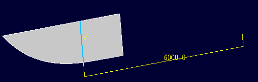
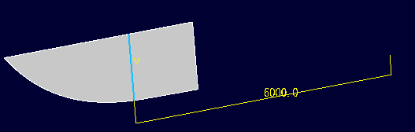

基準直線
基準直線
面(ソリッド、シート）上に指定した平面との交線となるようなスケッチ線を作成します。 
操作方法
パラメータを入力するとスケッチ線がプレビュー表示されます。位置を確認して、OKボタンで実行します。
パラメータ
- 面
交線をとる面を選択します。
- 軸方向
交線をとる平面の法線方向を指定します。(方向入力)
- 軸位置
交線をとる平面の位置を原点からの法線軸上の距離で指定します。
基準直線面(ソリッド、シート）上に指定した平面との交線となるようなスケッチ線を作成します。 
パラメータを入力するとスケッチ線がプレビュー表示されます。位置を確認して、OKボタンで実行します。
交線をとる面を選択します。
交線をとる平面の法線方向を指定します。(方向入力)
交線をとる平面の位置を原点からの法線軸上の距離で指定します。